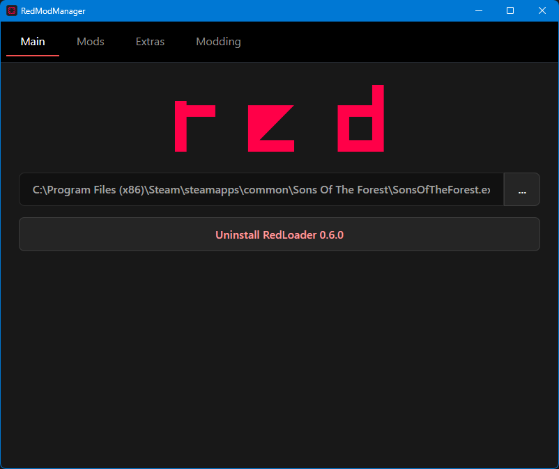

Open it and check
.NET desktop developmentas in the image below and click install.
Visual Studio as long as the needed .NET desktop development will be downloaded and installed.

Download Visual Studio Community Edition from
here if you didn't do it before.
Open it and check .NET desktop development
as in the image below and click install.
Visual Studio as long as the needed .NET desktop development will be downloaded and installed.
Download it from here and install it as you would do with a standard program.
If you still haven't installed RedLoader because you never played with mods, follow the next instructions.
Download RedModManager from here clicking on installer
and downloading the latest available version. It doesn't need an installation, you can open the .exe right away.
After opening it, click on Install RedLoader vX.X.X
button to install RedLoader.
If the installtion was successfull, you will now see Uninstall RedLoader vX.X.X
instead.

While RedModManager is open, navigate to the Extras
tab and click on Install UnityExplorer vX.X.X
button.
Download it from here, and extract the .zip content in a folder.
You can open it running dnSpy.exe